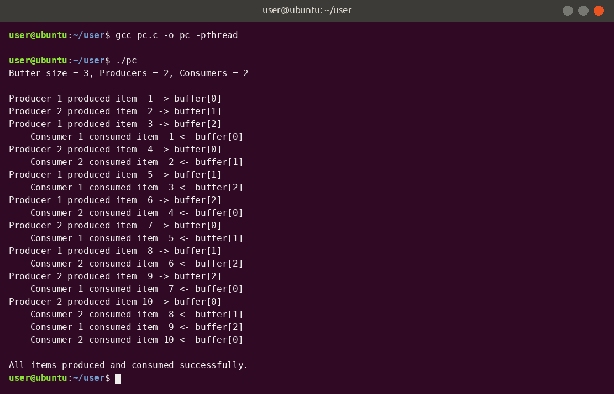

Practical 3
Producer–Consumer Problem using Semaphores and Mutex
Theory
The Producer–Consumer (bounded buffer) problem is a classic synchronisation problem. Producers put items into a fixed-size buffer and consumers take them out, at the same time.
The problems to solve
- A producer must wait if the buffer is full.
- A consumer must wait if the buffer is empty.
- Only one thread may change the buffer at a time – otherwise a race condition corrupts the data.
Key concepts
- Critical section – the part of code that accesses shared data (here the buffer and its indexes).
- Semaphore – an integer variable changed only by two atomic operations:
sem_wait()(decrement; blocks if the value is 0) andsem_post()(increment; wakes a waiting thread). - Counting semaphore – can hold any non-negative value, so it can count free or used buffer slots.
- Mutex – a lock (
pthread_mutex_lock/unlock) that allows only one thread inside the critical section at a time (mutual exclusion). - Thread – a lightweight unit of execution inside a process; threads share the same memory. Created with
pthread_createand waited for withpthread_join. - Circular buffer – the indexes
inandoutwrap around using% BUFFER_SIZE.
How the solution works
empty_slotsstarts atBUFFER_SIZE(all slots free);full_slotsstarts at0.- Producer:
sem_wait(empty_slots)→ lock mutex → insert item → unlock mutex →sem_post(full_slots). - Consumer:
sem_wait(full_slots)→ lock mutex → remove item → unlock mutex →sem_post(empty_slots). - The counting semaphore is always taken before the mutex. Reversing this order can cause a deadlock, because a thread could hold the mutex while waiting for a slot.
Code
/* Practical 3 : Producer-Consumer using counting semaphores and mutex */
#include <stdio.h>
#include <stdlib.h>
#include <pthread.h>
#include <semaphore.h>
#include <unistd.h>
#include <time.h>
#define BUFFER_SIZE 3
#define ITEMS_PER_THREAD 5
#define NUM_PRODUCERS 2
#define NUM_CONSUMERS 2
int buffer[BUFFER_SIZE];
int in = 0, out = 0, item_counter = 0;
sem_t empty_slots, full_slots; /* counting semaphores */
pthread_mutex_t mutex = PTHREAD_MUTEX_INITIALIZER;
void *producer(void *arg) {
int id = *(int *)arg;
for (int i = 0; i < ITEMS_PER_THREAD; i++) {
usleep(100000 + rand() % 200000);
sem_wait(&empty_slots); /* wait for an empty slot */
pthread_mutex_lock(&mutex); /* enter critical section */
int item = ++item_counter;
buffer[in] = item;
printf("Producer %d produced item %2d -> buffer[%d]\n", id, item, in);
in = (in + 1) % BUFFER_SIZE;
pthread_mutex_unlock(&mutex);
sem_post(&full_slots); /* one more full slot */
}
return NULL;
}
void *consumer(void *arg) {
int id = *(int *)arg;
for (int i = 0; i < ITEMS_PER_THREAD; i++) {
usleep(300000 + rand() % 300000);
sem_wait(&full_slots); /* wait for a full slot */
pthread_mutex_lock(&mutex);
int item = buffer[out];
printf(" Consumer %d consumed item %2d <- buffer[%d]\n", id, item, out);
out = (out + 1) % BUFFER_SIZE;
pthread_mutex_unlock(&mutex);
sem_post(&empty_slots); /* one more empty slot */
}
return NULL;
}
int main(void) {
pthread_t prod[NUM_PRODUCERS], cons[NUM_CONSUMERS];
int pid[NUM_PRODUCERS], cid[NUM_CONSUMERS];
srand(time(NULL));
sem_init(&empty_slots, 0, BUFFER_SIZE);
sem_init(&full_slots, 0, 0);
printf("Buffer size = %d, Producers = %d, Consumers = %d\n\n", BUFFER_SIZE,
NUM_PRODUCERS, NUM_CONSUMERS);
for (int i = 0; i < NUM_PRODUCERS; i++) { pid[i] = i + 1; pthread_create(&prod[i], NULL,
producer, &pid[i]); }
for (int i = 0; i < NUM_CONSUMERS; i++) { cid[i] = i + 1; pthread_create(&cons[i], NULL,
consumer, &cid[i]); }
for (int i = 0; i < NUM_PRODUCERS; i++) pthread_join(prod[i], NULL);
for (int i = 0; i < NUM_CONSUMERS; i++) pthread_join(cons[i], NULL);
printf("\nAll items produced and consumed successfully.\n");
sem_destroy(&empty_slots);
sem_destroy(&full_slots);
pthread_mutex_destroy(&mutex);
return 0;
}
Output

Tap or click the screenshot to open it full size.